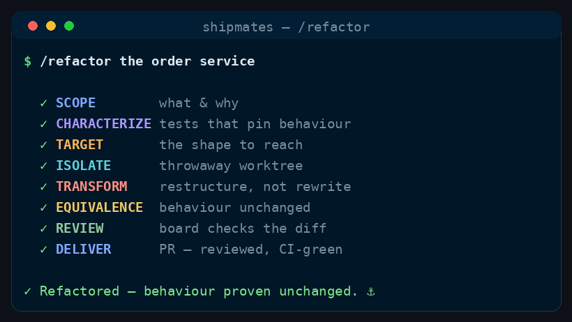

Command
/refactor
pin behaviour → transform → prove equivalence
Change the shape of the code without changing what it does — pin current behaviour in characterization tests first, transform, then prove equivalence by those tests passing unmodified and no existing test being deleted, skipped or loosened.
See it run

/refactor runs, in order.How to run it
Run it in your harness
/refactor <what to refactor + why — e.g. "split the 900-line order service, it's untestable"><angle brackets> = required · [square brackets] = optional
Step by step
The stages
Eight stages, in order. Two are hard gates — the run stops there until they pass.
Cost discipline
- Stable workflow instructions come before runtime input. Read and parse the complete runtime-input section at the end before acting; do not weave volatile issue text, arguments, diffs, or generated output through this prefix.
- Complexity-Based Tiered Execution: Before starting the workflow, evaluate the task complexity based on the input and repository context to select one of three execution paths:
- Simple: Minor/straightforward changes (e.g. documentation, typos, single config line, small edits affecting <= 2 files and <= 15 lines of code, no specialist flags). Bypasses spawning all subagents entirely; the main agent (you) executes, validates, and delivers the PR directly.
- Medium: Moderate changes (<= 5 files, no major module boundaries, no architectural/security/delivery flags). Bypasses parallel design specs and the large acceptance board. Spawn a Planner and a single Builder and single SDET. The main agent reviews and delivers.
- High: Complex or high-risk changes (e.g. major refactors, architectural boundaries, security/delivery changes). Follow the full multi-agent process loop described in the command.
- Spend subagent seats only where their decision can change the outcome. Route model and effort at spawn by work difficulty; never hardcode a model in canonical content.
- Ask every subagent for a compact structured return: decision/status first, criterion findings and minimal evidence, then blockers, changed files with one-line rationale, and next action as relevant. Return decisions, not transcripts or raw logs.
A refactor that quietly changes behaviour is a bug with good PR copy. The gate here is the one thing that distinguishes the two: behaviour is pinned in tests written before the change, and those tests pass unmodified afterwards. If a test had to be edited to make the refactor pass, it wasn't a refactor.
The runtime target is what to restructure and why. The motivation is not optional — Stage 5 has to judge whether the structure actually improved, and "it's cleaner" is not reviewable. If it's empty, ask what hurts and what it costs.
If the ask is "rename/replace X with Y across N call sites", stop and run /migrate instead. That is a census job: it's provable by re-grepping for the old pattern and finding nothing. A refactor has no such grep, which is exactly why it needs behaviour pinned first.
-
Stage 0 — Scope, motivation, and the
/migrateescape hatchName the target precisely (files, module, the seam being introduced) and state the motivation in one sentence. Inspect
git logandgit blameon the target files to understand historical context, linked issues, and why current boundaries were chosen. Check the escape hatch above. Then decideIS_ARCH_SIGNIFICANT: does this cross module boundaries, move a public surface, or change who depends on whom? If yes, Stage 1.5 runs. -
Stage 1 — Characterization tests
Gate: HARD GATE
Crew:
sdetSpawn the
sdetto pin the code's behaviour as it is today — around the seam being changed, at the boundary a caller actually sees.This is the inverse of
/fix-bugStage 0, and conflating the two is a live risk./fix-bugwrites a test asserting the correct behaviour, so it fails now. Here you assert the current behaviour, so it passes now — including behaviour you believe is wrong. A bug that survives the refactor unchanged is a success; fixing it here means you can no longer tell which change broke something. Note anything that looks like a bug and file it, don't fix it.Run them and confirm they are green before touching a line of production code. Commit them first, so the pinned baseline is visible in the history.
-
Stage 1.5 — Target structure
Crew:
architect(only ifIS_ARCH_SIGNIFICANT)The architect returns the intended shape — new boundaries, what owns what, the dependency direction, and which seam to cut first — so the transform implements a decision instead of improvising one.
-
Stage 2 — Isolate
git -C <repo> fetch origin git -C <repo> worktree add <WORKTREE_DIR> -b <BRANCH> origin/<BASE_BRANCH> -
Stage 3 — Transform
Crew:
senior-engineerOverride the agent's default posture explicitly in the brief.
senior-engineeris told to make the minimum viable diff and to expand no further than asked — correct everywhere else, wrong here, where restructuring is the task. Tell it plainly: under this order the refactor is the assignment, the Stage 1 tests are the contract, and it must not change observable behaviour to make the new shape tidier. Scope stays bounded by the Stage 0 target, not by the usual minimal-diff instinct. -
Stage 4 — Equivalence
Gate: HARD GATE
Crew:
sdetTwo rules, deliberately separated — one is mechanical, one needs judgement:
1. The binary gate. Every characterization test from Stage 1 passes unmodified — byte-identical to the moment it was written. These are the crew's own tests, frozen by construction, so this has no false positives. Any edit to them fails the gate outright.
2. The reviewed rule — applied to the repo's pre-existing tests: no assertion's expected value changed, and no test was deleted, skipped,
xfailed, or loosened. Renames, moves, and import/call-site updates are explicitly allowed — a rename legitimately touches every test that references the old name, and a byte-level rule here would fail on the first real refactor and then be waived every run until it meant nothing. Any deletion or weakening must be listed line-by-line with a justification in the report, and is a reviewer's call, not the engineer's.Then the full suite green, and the CI gate: poll
gh pr checksuntil done; if red, pullgh run view <run-id> --log-failed, dispatch asenior-engineerfixer, re-push, re-poll — bounded byMAX_FIX_ROUNDS. Never advance a red PR. (Long polls: background/until-loop, not chained sleeps.) -
Stage 5 — Review
Crew:
architectsdetperformance-engineer(agents, on the pushed PR head)architect(always): did the structure genuinely improve against the Stage 0 motivation, or is this churn that moved the problem? A refactor that doesn't pay for its diff is aREJECT.sdet(fresh — not the one who wrote the tests): audits the test diff against the reviewed rule above, and confirms the characterization tests are unmodified.performance-engineer(only if the stated motivation was performance): binds it to the role's own standard — no before/after measurement means it is not an optimisation, whatever the diff looks like.
Any
REJECT/FAIL→ loop asenior-engineerfixer, re-push, re-run the CI gate and this stage, bounded byMAX_FIX_ROUNDS, then escalate. -
Stage 6 — Deliver
Open (or, if
MERGE_MODE=auto, merge) the PR. Body: the motivation, the structural change in one paragraph, the characterization tests and that they are unmodified, any pre-existing test the diff touched and why, and the green-CI link. File the bugs you found and didn't fix as follow-up issues.
Runtime input
$ARGUMENTS names what to restructure and why. If empty, ask what hurts and what it costs.
Config (override only if the repo needs it)
BASE_BRANCH= the repo's default branch.WORKTREE_DIR=../<repo>--refactor-<slug>.BRANCH=refactor/<slug>.MAX_FIX_ROUNDS=3.MERGE_MODE=manual(stop at a reviewed PR;autoopt-in).- Quality bar / test commands = whatever the repo's README / CLAUDE.md / test config states.
- The orchestrator owns all git/gh; agents never push.
Guardrails
- Behaviour is pinned before it is preserved. No characterization tests, no refactor.
- Don't fix bugs here. A bug found while refactoring becomes an issue, and
/fix-bughandles it — mixing the two makes it impossible to attribute a regression. - The two gates are not interchangeable: characterization tests are byte-frozen; pre-existing tests may be moved and renamed but never weakened.
- Behaviour-preserving means observable behaviour — public API, output, side effects, error cases.
- A refactor with no stated motivation is unreviewable; ask before starting.
- If a role doesn't resolve to an
.claude/agents/*.md, fall back togeneral-purposewith the brief inlined, and note it.
Where this lives
This page is generated from commands/refactor.md. The installer copies it to ~/.claude/skills/refactor/SKILL.md for every project, or .claude/skills/refactor/SKILL.md inside a single repo.